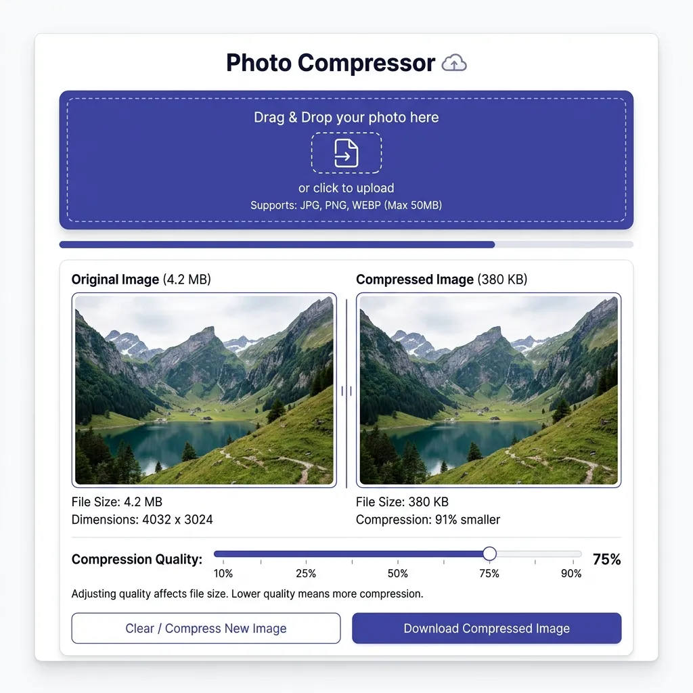

Nishikant Xalxo
@nishix_vamp • Published on May 23, 2026
Whether you're uploading a passport photo, submitting official documents to a strict government portal, or optimizing resources for a high-performance web application, you have likely run into rigid image file size and dimension limits. Trying to fit an image into a budget of "under 100 KB" or resizing a photo to "exactly 3.5 x 4.5 cm" without making it look pixelated, blurry, or unnaturally stretched is one of the most frustrating aspects of digital asset preparation.
To successfully navigate these limits, it is essential to understand the science of image optimization, formatting trade-offs, and physical-to-pixel conversions. This comprehensive guide walks you through the physics, mathematics, and practical steps of modern image compression, allowing you to produce pristine, compliant images every single time.

Historical Context & Technological Significance
At the dawn of the consumer internet in the early 1990s, high-resolution digital media was practically non-existent. A single standard color photograph could easily exceed several megabytes—an insurmountable barrier for the dial-up modems of the era, which crawled at speeds of 14.4 to 56.6 Kbps. The birth of standard compression algorithms was not merely a convenient optimization; it was the technological catalyst that made the World Wide Web visually interactive. In 1993, when Marc Andreessen proposed the <img> HTML tag, the web was still largely text-only, and transferring heavy graphical data threatened to collapse early network nodes.
To address this bottleneck, the Joint Photographic Experts Group finalized the JPEG standard in 1992, introducing a lossy compression method that could shrink photographic files to 10% of their raw size with negligible visual degradation. Around the same time, a high-profile patent dispute over CompuServe’s GIF format in 1994 spurred the developer community to design the Portable Network Graphics (PNG) format. Finalized in 1996, PNG was engineered as a license-free, lossless standard featuring robust alpha-transparency. In 2010, Google introduced WebP, leveraging VP8 video keyframe predictive coding to offer both lossy and lossless modes that compress files 25% to 30% more efficiently than JPEG at matching visual quality. Today, image compression is the quiet engine powering global content delivery networks, web accessibility, search engine optimization, and national digital infrastructures, facilitating billions of visual uploads and transactions daily.
Lossy vs. Lossless Compression: How It Works
Digital image compression falls into two categories, depending on how data is managed during the reduction process:
- Lossy Compression: Removes redundant or less perceptible visual data from the file (like minor color variations in a sky). This results in drastic file size reductions with negligible visual changes. JPG and WEBP are primary examples of lossy formats.
- Lossless Compression: Compresses the file without removing any pixel data. The file can be restored back to its exact original state, but the compression ratio is much lower. PNG is the industry standard for lossless images.
WEBP vs. JPG vs. PNG: Which Format is Best?
Choosing the correct output format depends entirely on what your image contains and where it is going:
| Format | Best Used For | Compression Efficiency | Pros/Cons |
|---|---|---|---|
| JPG / JPEG | General photographs, document uploads, portal submissions. | High (Lossy) | Highly compatible, excellent for photographic gradients. No transparency support. |
| PNG | Logos, screenshots, graphics with text, transparent backgrounds. | Low-Medium (Lossless) | Perfect quality retention, supports transparency. Large file sizes for photos. |
| WEBP | Web development, modern responsive sites, quick sharing. | Maximum (Lossy/Lossless) | Up to 30% smaller than JPG at identical quality. Supported by all modern browsers. |
The Mathematics of Compression: Algorithmic Deep-Dive
1. JPEG and the Discrete Cosine Transform (DCT) Block Coding
JPEG compression exploits the natural physiological limits of human vision. Our eyes are highly sensitive to small changes in brightness (luminance) but much less sensitive to subtle changes in color (chrominance). The JPEG algorithm uses this asymmetry through a sequence of mathematical stages:
- Color Space Transformation: The image is converted from RGB (Red, Green, Blue) coordinates to YCbCr (Luminance $Y$, Blue-difference Chrominance $Cb$, Red-difference Chrominance $Cr$) coordinates.
- Chroma Subsampling: Since the human eye struggles to perceive high-frequency color detail, the resolution of the chrominance channels ($Cb, Cr$) is downsampled. A standard 4:2:0 subsampling pattern discards 75% of the color data while preserving 100% of the luminance data, immediately cutting the raw uncompressed data size in half with zero perceptible visual impact.
- Block Partitioning: The $Y$, $Cb$, and $Cr$ channel matrices are divided into non-overlapping blocks of $8 \times 8$ pixels. If the image dimensions are not multiples of 8, they are padded along the borders.
- Forward Discrete Cosine Transform (FDCT): The $8 \times 8$ blocks are shifted from a range of $[0, 255]$ to $[-128, 127]$. Each block is then passed through the FDCT, transforming spatial pixel coordinates into frequency coefficients. The continuous mathematical equation for this transformation is:
F(u, v) = (1/4) * C(u) * C(v) * Σ_{x=0}^{7} Σ_{y=0}^{7} f(x, y) * cos( (2x+1)uπ / 16 ) * cos( (2y+1)vπ / 16 )Where $f(x, y)$ is the intensity value at spatial coordinate $(x,y)$, and $C(u), C(v) = 1/\sqrt{2}$ if $u,v = 0$, and $1$ otherwise. This output yields 64 coefficients: the top-left coefficient $F(0,0)$ represents the "DC coefficient" (the average brightness of the entire block), while the remaining 63 are "AC coefficients" (representing increasing spatial frequencies).
- Quantization: This is the core lossy phase. Each of the 64 coefficients is divided by a matching value from a static $8 \times 8$ Quantization Matrix ($Q$) and rounded to the nearest integer:
F_q(u, v) = round( F(u, v) / Q(u, v) )Because the human eye is blind to high-frequency variations, the quantization matrix divides these high-frequency AC coefficients by very large divisors. This forces the majority of AC coefficients to round down to zero, leaving behind a highly sparse matrix containing mostly zeros.
- Zig-Zag Scanning & Entropy Coding: The sparse $8 \times 8$ grid is traversed in a zig-zag sequence, starting from the low-frequency DC component and descending into the high-frequency zeros. This packs all non-zero coefficients together and clusters the trailing zeros into a single block. This string is then compressed using Run-Length Encoding (RLE) and Huffman coding to create the highly optimized binary stream.
2. PNG and the DEFLATE Lossless pre-filters
Unlike JPEG, the PNG format is mathematically lossless and bit-perfect. The PNG standard accomplishes this using a two-stage pipeline consisting of Spatial Pre-filtering followed by DEFLATE compression:
- Spatial Pre-filtering: Standard lossless compressors like DEFLATE work best when files contain highly repetitive sequences of identical bytes. However, photographic gradients and color shifts contain continuously changing pixel values, which compresses poorly. PNG solves this by applying one of five byte-level filters to each horizontal scanline of pixels before compression. These filters calculate the difference (delta) between the active pixel and its neighbors:
- Type 0 (None): The pixel values remain untouched.
- Type 1 (Sub):** Calculates the difference between the current pixel and the pixel to its immediate left.
- Type 2 (Up): Calculates the difference between the current pixel and the pixel directly above it.
- Type 3 (Average): Predicts the pixel value based on the mathematical average of the left and above pixels.
- Type 4 (Paeth): Evaluates three neighboring pixels (left $a$, above $b$, and upper-left diagonal $c$). It computes a linear predictor ($p = a + b - c$) and selects the actual neighbor that minimizes the absolute distance $|p - \text{neighbor}|$.
- DEFLATE Compression: The filtered scanlines are passed to the DEFLATE algorithm (the same library powering GZIP and ZIP compression). DEFLATE performs a dual-pass optimization: first, it uses the LZ77 algorithm to parse the byte streams for matching duplicates within a sliding window, replacing duplicate strings with brief distance-and-length pointers. Second, it processes those pointers and literals through Huffman Coding, assigning the shortest variable-length bit sequences to the most frequent characters. This ensures the output is compressed to the maximum mathematical limit while retaining every single pixel exactly.
3. WebP's Predictive Coding Mechanics
WebP, developed by Google, represents a leap forward by adapting video compression mechanics for static image files. For lossy images, WebP relies on the **VP8 video codec keyframe engine**, which achieves superior compression through spatial predictive coding:
- Intra-Prediction: The encoder divides the image into blocks (macroblocks of $16 \times 16$ pixels or subblocks of $4 \times 4$ pixels). Rather than converting raw pixels to frequencies immediately, WebP attempts to predict the values of pixels inside a block by examining the boundary pixels of already encoded blocks to its left and top.
- Prediction Modes: The encoder evaluates multiple prediction directions. For example, in Vertical Mode, it projects the top border row downward. In Horizontal Mode, it projects the left border column to the right. In TrueMotion Mode, it analyzes the diagonal gradients. By matching the block to the most accurate directional model, only the residual differences (the error matrix) are kept.
- Transform & Arithmetic Coding: The sparse residual matrices are converted via a Discrete Cosine Transform or a Walsh-Hadamard Transform (WHT). These values are then compressed using a highly efficient **Arithmetic Encoder**, which outclasses traditional Huffman tables by mapping the whole data sequence into a single fractional number, reducing file sizes by an additional 25-30% compared to JPEG.
Understanding Physical Dimensions: CM, MM, Inch to Pixels
Many official forms request photos in physical sizes like 3.5 x 4.5 cm or 2 x 2 inches. Since computer screens and digital files only deal with pixels, we use DPI (Dots Per Inch) or PPI (Pixels Per Inch) to translate between the physical and digital worlds.
The Golden Formula:
Pixels = Physical Inches × DPI
If you have metric dimensions (mm or cm), first convert them to inches (1 inch = 2.54 cm = 25.4 mm), then multiply by your target DPI (typically 300 DPI for high-quality printing).
Since standard conversions yield fractional values, we must mathematically round them to the nearest integer. Here are the continuous equations used to convert metric systems to digital pixel values:
Millimeter Formula: Pixels = round( (Dimension_in_mm / 25.4) * DPI )
Centimeter Formula: Pixels = round( (Dimension_in_cm / 2.54) * DPI )
Conversion Examples (at 300 DPI):
- 2" x 2" (US Passport):
(2 × 300) x (2 × 300)= 600 x 600 pixels - 3.5 cm x 4.5 cm (India/Schengen Visa): First convert to inches:
3.5 ÷ 2.54 = 1.378"and4.5 ÷ 2.54 = 1.772". Then multiply by 300 DPI:1.378 × 300 = 413.4 px(rounds to 413) and1.772 × 300 = 531.6 px(rounds to 532) = 413 x 532 pixels
DPI-to-Pixel Conversion Reference Chart
Use this reference table to quickly look up common physical-to-pixel conversions at standard web, draft-print, and high-resolution print densities:
| Physical Dimensions | 72 DPI (Web Screen) | 150 DPI (Draft Print) | 300 DPI (High-Res Print) |
|---|---|---|---|
| 2" x 2" (US Passport) | 144 x 144 pixels | 300 x 300 pixels | 600 x 600 pixels |
| 3.5 x 4.5 cm (Visa Standard) | 99 x 128 pixels | 207 x 266 pixels | 413 x 531 pixels |
| 3.5 x 3.5 cm (ID Card Size) | 99 x 99 pixels | 207 x 207 pixels | 413 x 413 pixels |
| 5.0 x 7.0 cm (Canadian Passport) | 142 x 198 pixels | 295 x 413 pixels | 591 x 827 pixels |
| A4 Document (21.0 x 29.7 cm) | 595 x 842 pixels | 1240 x 1754 pixels | 2480 x 3508 pixels |
Official Upload Limits for Government Portals
When preparing documents and portraits for official national portals, files must conform to precise requirements to pass security and automated validation algorithms. Below is a comprehensive breakdown of standard global submission standards:
| Government Agency / Portal | Required Image Resolution | Maximum File Size | Acceptable Formats |
|---|---|---|---|
| US Dept of State (Passport / DS-160) | Exactly 600 x 600 px to 1200 x 1200 px | 240 KB | JPEG (24-bit color) |
| India Passport & OCI Online Portal | Min 350 x 350 px, Max 1000 x 1000 px | 300 KB | JPG / JPEG |
| Schengen Visa Unified Consulate | Approx. 413 x 531 px (300 DPI) | 200 KB | JPG / JPEG |
| UK HM Passport Office Online | Min 600 x 750 px, Max 1200 x 1500 px | 10 MB (highly generous) | JPG / JPEG |
| Australian Passport Office | Min 1200 x 1600 px (High Resolution) | 10 MB | JPG / JPEG |
Step-by-Step Practical Setup & Checklist Guide
Follow this detailed checklist to prepare, crop, and compress your photograph for any official portal, ensuring instant compliance:
- Phase 1: Capture and Environment Audit
- Stand 3–4 feet away from a neutral, light-colored background (preferably off-white or plain white).
- Position yourself directly facing a diffused, soft light source (like a window on an overcast day) to eliminate shadows under your nose, eyes, or ears.
- Maintain a neutral facial expression—keep your eyes open, mouth closed, and both ears clearly visible.
- Phase 2: Mathematical Aspect-Ratio Cropping
- Identify the required physical scale (e.g., 3.5 x 4.5 cm).
- Calculate the target pixels at 300 DPI: $\text{Width} = (3.5 / 2.54) \times 300 = 413\text{ px}$; $\text{Height} = (4.5 / 2.54) \times 300 = 531\text{ px}$.
- Perform an aspect-ratio locked crop using those proportions. Ensure your chin-to-crown height spans 70–80% of the overall frame.
- Phase 3: Secure Compression Optimization
- Load the cropped file into a client-side compressor that operates entirely locally within your browser to protect your sensitive personal data.
- Choose **JPEG** for photos (to compress gradient tones gently) or **PNG** for text and signatures (to preserve contrast boundaries).
- Slide the compression quality parameter to between **75% and 85%**. This produces maximum storage savings without creating visible compression noise.
- Verify the final file size is safely below your portal's limit (e.g., under 240 KB) before exporting.
How to Compress Images Safely Without Quality Loss
To reduce your photo's file size cleanly without causing pixelation or blurring, follow these expert guidelines:
- Keep the Original Safe: Never overwrite your high-resolution original file. Work on a copy.
- Match Aspect Ratio: If you need to change dimensions, enable cropping or lock the aspect ratio to prevent your face or documents from stretching.
- Reduce Quality Gently: For JPG files, a compression quality of 75% to 85% reduces file size by up to 70% while keeping visual changes completely invisible to the human eye. Going below 60% will introduce artifacts and noise.
- Use Client-Side Tools: Avoid uploading personal or official document photos to external servers. Use browser-first tools that process data directly on your processor, keeping your sensitive images private.
Compress Your Photos Locally — Free
Use our browser-based Photo Compressor to instantly compress, resize, crop, and convert images to JPG, PNG, or WEBP. Processing runs entirely on your device for absolute privacy.
Open Photo Compressor →Photo Compression & DPI Frequently Asked Questions (FAQ)
Q1: Why do government portals have such strict file size and dimension limits?
A: Government portals process millions of passport, visa, and document uploads daily. Implementing strict limits is a critical scaling strategy that prevents servers from collapsing under petabytes of raw, uncompressed images. Additionally, automated facial-recognition algorithms rely on consistent, standardized dimensions (like 600x600 px) to map key anatomical landmarks (such as eye-to-eye spacing and chin length). Restricting file sizes to under 200 KB ensures fast network transmission and keeps storage infrastructures running smoothly, while specific pixel-resolution constraints prevent systems from receiving low-res, unreadable files.
Q2: What is the difference between DPI and PPI, and does DPI matter for screen display?
A: **PPI (Pixels Per Inch)** measures the density of digital pixels displayed along one linear inch of a digital screen or camera sensor. **DPI (Dots Per Inch)** refers specifically to the physical ink droplets deposited by a commercial printer along a physical inch of paper. However, the terms are often used interchangeably. For digital-only uploads (viewing an image on a screen), the DPI metadata value is entirely irrelevant; the system only cares about the absolute pixel resolution (e.g., 600x600 px). DPI only matters when you translate physical units (like cm or inches) into pixels, or when printing your digital image onto physical photo paper.
Q3: Why does my compressed JPEG image look blurry or have blocky patterns ("mosquito noise")?
A: This blurring and blockiness are known as "compression artifacts." When you compress a JPEG too aggressively (typically setting quality below 50-60%), the quantization step forces the frequency coefficients of its $8 \times 8$ pixel blocks down to zero. This strips away high-frequency edge data and subtle color variations, leaving behind blocky boundaries that match the $8 \times 8$ grids. "Mosquito noise" refers to the flickering, noisy patterns that form around high-contrast edges (like black text on a white background) because the high frequencies needed to define sharp borders have been completely zeroed out.
Q4: Is it safe to use free online image compressors for my sensitive official documents?
A: Using standard online compressors that require you to upload files to an external web server carries significant privacy risks. Sensitive official documents (like passports, driver's licenses, or tax slips) can be stored on remote, insecure databases or processed by third-party services without your explicit consent. To ensure complete privacy, use browser-first, client-side applications (like SHADER7's Photo Compressor) that use the HTML5 Canvas API and JavaScript to perform all scaling and compression directly on your local CPU. Your sensitive images never leave your local device, keeping your personal identity safe.
Q5: Why is my PNG file still extremely large compared to a JPEG even after compression?
A: PNG uses the DEFLATE algorithm, which is a mathematically lossless compression standard. Because it is bound by absolute bit-perfect recovery, it cannot simply discard high-frequency noise or color details. For a complex photo with millions of unique pixel variations (like outdoor foliage or skin textures), there is very little repeating pattern to optimize, meaning PNG can only shrink the file slightly. JPEG, by contrast, is lossy: it discards over 90% of high-frequency data immediately through quantization. For photographs, JPEG is far more efficient, whereas PNG is superior for clean digital graphics, logos, and high-contrast text where lossless boundaries are critical.
Advanced Image Compression Science: The Quantization Matrix
To master digital photo compression, we must look beyond basic slider adjustments and analyze the mathematical science of image encoding. Under the standard JPEG compression pipeline, raw RGB pixels are first transformed into the YCbCr color space (representing Luminance (Y), Blue Chrominance (Cb), and Red Chrominance (Cr)). Because human vision is highly sensitive to luminance (brightness) but relatively insensitive to chrominance (color details), chroma channels are downsampled by a factor of 2 or 4 (chroma subsampling), discarding color data without perceived loss.
The image is then divided into 8x8 pixel blocks, and each block is transformed into spatial frequency coefficients using the Discrete Cosine Transform (DCT). This separates the low-frequency elements (overall shapes/shading) from the high-frequency elements (sharp borders/fine noise). The core compression occurs during **Quantization**, where each coefficient is divided by a value from a **Quantization Matrix** and rounded to the nearest integer. High-frequency coefficients are divided by large numbers, rounding them to zero. The resulting sparse matrix is then serialized using run-length and Huffman entropy encoding, producing a highly compressed file with near-zero visual degradation.
Exhaustive Photo Compression FAQs
Q1: How does Discrete Cosine Transform (DCT) compress image data without noticeable quality loss?
The Discrete Cosine Transform (DCT) works by taking an 8x8 block of pixels and transforming their spatial color values into a grid of spatial frequency coefficients. The top-left coefficient represents the lowest frequency (the DC coefficient, showing average brightness), while the bottom-right coefficients represent the highest frequencies (AC coefficients, showing fine spatial noise and sharp details). Because the human eye is poor at resolving high-frequency spatial details, we can quantize these AC coefficients heavily—dividing them by large factors and rounding them to zero—without the human brain perceiving the loss. This mathematical compression transforms a complex grid of 64 distinct pixels into a sparse matrix containing mostly zeros, which compresses extremely efficiently during entropy encoding, reducing file sizes by up to 90% with minimal loss.
Q2: What is chroma subsampling, and why does it exploit human visual limits?
Chroma subsampling is an encoding technique that reduces the resolution of color information in an image relative to the brightness information. Under the YCbCr color model, an image is split into Luminance (Y) and two Chrominance channels (Cb and Cr). The human eye has significantly more rod cells (sensitive to brightness) than cone cells (sensitive to color). Chroma subsampling (such as 4:2:0 or 4:2:2 formats) discards 50% to 75% of the color data while keeping 100% of the luminance details. When displayed, the color values are interpolated back, but because our visual cortex cannot resolve the color boundaries as sharply as the brightness borders, the image appears perfectly sharp, achieving massive data savings.
Q3: Why are browser-based local compression tools safer than cloud-based online editors?
Cloud-based online image editors require you to upload your physical photos to their remote web servers. This exposes your personal image data to intercept, storage in server logs, data leaks, and potential scraping by artificial intelligence training engines. Browser-based local tools utilize the HTML5 Canvas API and JavaScript to process the image directly inside your local browser memory sandbox. Your photos never leave your physical device, are never transmitted over the internet, and are processed with 100% data privacy. Local compression is immune to network eavesdropping and server-side data retention policies.
Q4: What are quantization matrices in JPEG compression, and how do they determine quality settings?
The quantization matrix is the primary tool that controls the compression level (and quality) of a JPEG image. After Discrete Cosine Transform (DCT) conversion, each of the 64 coefficients in an 8x8 block is divided by the corresponding value in a quantization matrix, and the result is rounded to the nearest integer. When you adjust the JPEG "quality" slider from 1 to 100, the compression software dynamically scales the values inside the quantization matrix. Higher quality settings use a matrix with small numbers (keeping more detail), while lower quality settings scale the matrix values upwards, rounding more high-frequency coefficients to zero and producing visible compression artifacts.
Q5: How does the HTML5 Canvas toDataURL method execute local JPEG compression?
The HTML5 Canvas API provides the toDataURL('image/jpeg', quality) method, which triggers the browser's built-in image compression pipeline in JavaScript. The canvas contains raw pixel data (RGBA) rendered in memory. When toDataURL is called, the browser's native C++ engine processes the raw pixel buffer, executes RGB-to-YCbCr color space transformation, applies chroma subsampling, performs Discrete Cosine Transform (DCT), quantizes the coefficients based on the provided quality parameter (0.0 to 1.0), and encodes the data into a base64-encoded JPEG stream. This local operation is fast, highly optimized, and runs entirely client-side.
Q6: What is the physical difference between lossy and lossless image compression?
Lossless compression (such as PNG or GIF) utilizes algorithms like LZW or DEFLATE to identify and compress repeating patterns of data without discarding any information. When decompressed, the pixel grid is mathematically identical to the original image down to the exact bit. Lossy compression (such as JPEG) discards data that is deemed visually redundant or imperceptible to human eyes. It alters the underlying pixel values to achieve significantly higher compression ratios. While PNG is ideal for graphics and screenshots requiring pixel-perfect sharpness, JPEG is the global standard for complex photographs, compressing files to 10x smaller than PNG.
Q7: How do compression artifacts like "blocking" and "mosquito noise" arise?
Compression artifacts are visual distortions that appear when an image is compressed too heavily. JPEG divides an image into 8x8 pixel blocks. When the quantization matrix is scaled very high, almost all the high-frequency detail inside a block is rounded to zero, leaving only the flat DC average color. This creates distinct, visible square seams between the 8x8 blocks, known as blocking artifacts. Mosquito noise appears as flickering, fuzzy distortions along sharp high-contrast edges (like black text on a white background), caused by the loss of the high-frequency coefficients needed to render steep coordinate transitions cleanly.
Q8: Why does the sRGB color profile matter when saving and compressing web photos?
The sRGB color profile is the universally accepted standard color space for the web and digital display screens. If an image is captured or saved in a wider color profile (like Adobe RGB or DCI-P3), the colors will appear dull, washed out, or incorrectly saturated when viewed on standard web browsers or devices that do not support color profile translation. Saving images strictly in the sRGB color space ensures that your compressed files render with high color fidelity, deep contrast, and natural skin tones across all devices, mobile screens, and web platforms.